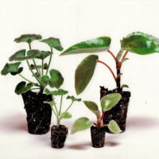
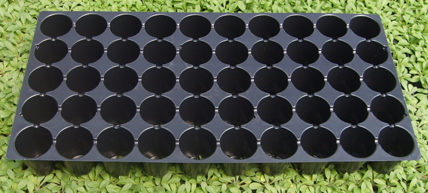
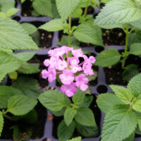
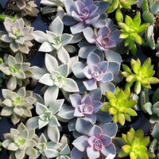

Zone Hardiness The United States Department of Agriculture (USDA) has devised a system to provide gardeners with a basic guide to plant hardiness how much winter cold a plant can withstand. The Hardiness Zone Map system divides the United States and Canada into numbered zones based on lowest average winter temperature. Even within a zone, different micro-climates exist, such as large urban areas which may be warmer or land situated at different elevations. What effects plant hardiness The Hardiness Zone Map is a valuable tool but it is not foolproof. There are a variety of factors that can influence the hardiness of a given plant in a garden. These factors include: soil type, drainage, snow cover, exposure to wind, winter, rainfall (or lack of), as well as fluctuations in temperature.
We specialize in providing quality plant material. Our dedication to quality and customer service has enabled us to grow from one small greenhouse at startup to more than 65,000 square feet of covered growing space today.
 View About PageWe offer a wide variety of annual flower seedlings and rooted cuttings, vegetables and herbs, fern liners, and rooted mum cuttings. We offer an extensive variety to choose from, however, in the event that you are looking for something not listed, please ask about our custom services.
 Read MoreThe Hardiness Zone Map is a valuable tool but it is not foolproof. There are a variety of factors that can influence the hardiness of a given plant in a garden. These factors include: soil type, drainage, snow cover, exposure to wind, winter, rainfall (or lack of), as well as fluctuations in temperature.
 Read MoreIf there are any questions or concerns you might have, please give us a call at 1-800-221-5797 or write us a line from our Contact Us page or email info@westelgreenhouse.com.
 Read More